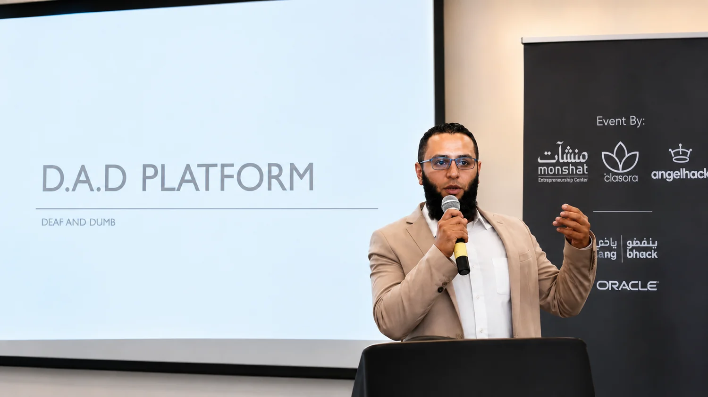
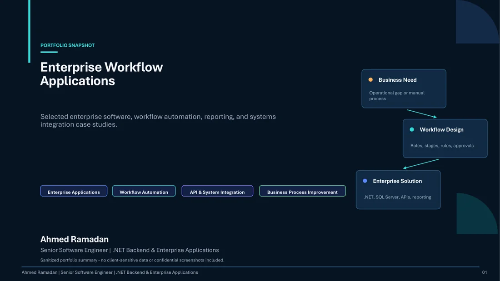
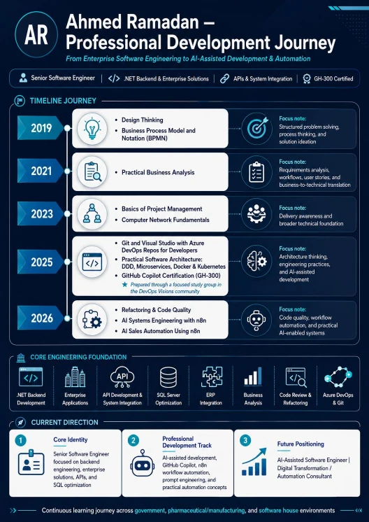

Workflow Acceleration
2 Days→~30 Min
Data preparation and aggregation
Reduced a multi-day preparation cycle to approximately half an hour.
Senior Software Engineer
.NET Backend & Enterprise Solutions
I design and build scalable .NET backend systems, enterprise applications, RESTful APIs, and integrations that simplify operations, improve performance, and turn business requirements into maintainable software.
Reduced a multi-day preparation cycle to approximately half an hour.
Achieved through EPICOR ERP and ZATCA integration.
About
I am a Senior Software Engineer with more than 13 years of experience across government, pharmaceutical and manufacturing environments, and software companies. My work connects backend engineering, enterprise application delivery, APIs, SQL Server optimization, ERP integration, and business requirements analysis.
I focus on practical outcomes: reliable services, maintainable code, faster workflows, better data visibility, and solutions that support real operational decisions. Alongside my core engineering work, I continue developing hands-on capability in AI-assisted development, workflow automation, and AI systems engineering.
Featured Projects
Integrated ERP finance workflows with ZATCA Phase 1 and 2, supporting approximately 100 e-invoices monthly and reducing manual entry errors by 95%.
Managed assignment, tracking, completion visibility, and follow-up for 90 employees across five departments, reducing manual follow-up by approximately 80%.
Delivered connected modules for employee data, self-service, time attendance, and payroll workflows supporting more than 120 employees.
Digitized request intake, review, approvals, and operational follow-up through a configurable role-based workflow.
Created more than 40 reports for finance, sales, purchasing, production, and operations to improve visibility and reduce manual extraction.
A hackathon MVP and prototype for a platform supporting people with hearing and speech disabilities. It is presented as an MVP, not a production system.

Supported the integration of a legacy finance workflow with ZATCA requirements while maintaining compatibility with the existing application.
Hands-on portfolio work exploring API-based workflows, n8n automation, AI agents, and practical business-process automation.
A portfolio prototype exploring guided learning sessions, structured exercises, and supportive feedback for children.
Experience
Government Sector Entity (Confidential) · Riyadh
Pharma Pharmaceutical Industries · Riyadh
ATHELTREE · Riyadh
Pharma Pharmaceutical Industries · Riyadh
Led architecture and development of an internal HR web application, employee self-service workflows, database design, stored procedures, deployment, and user support.
Innovation Solution Technology · Cairo
Delivered enterprise web applications, client customizations, reports, database optimization, deployments, and migrations from desktop to web-based .NET solutions.
Junior Developer · Technical Support Engineer · Computer Hardware Engineer
Built foundational experience in software development, customer support, database and reporting tools, deployment, troubleshooting, and end-user training.
Skills
Certifications & Development
Microsoft
Earned December 2025 · Online verifiable
Verify Credential ↗MarketMinds AI Academy
Professional development · June 2026
Verify Credential ↗Tech Mentors
DDD, Microservices, Docker & Kubernetes · July 2025
Tech Mentors
Hands-on refactoring · January 2026
Udemy
Version control and delivery foundations · 2020
Verify Credential ↗Course
Foundations, event design, patterns, tools, and scale · March 2026
Udemy
Project management foundations · 2023
Verify Credential ↗Professional Documents
Case Studies
Selected enterprise applications, sanitized case studies, and workflow solutions focused on measurable business impact.
View Portfolio PDF ↗
Learning Journey
A visual overview of continued learning across enterprise engineering, architecture, AI-assisted development, and automation.
View Learning Journey ↗
Resume
Download my resume for a detailed overview of my experience, projects, and technical capabilities.
Contact
Let’s connect to discuss enterprise software, backend engineering, system integration, and practical automation opportunities.